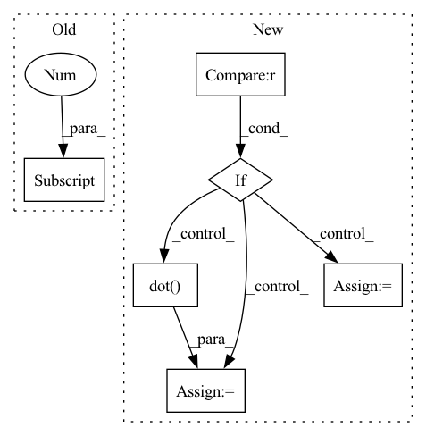

Pattern ID :34233

Before Change
gripper_in_XY = [0.0, 0.3, poker_position[2]] // gripper initial position with z == 0
poker_in_XY = [poker_position[0], poker_position[1]-0.05, poker_position[2]] // gripper initial position with z == 0
self.env.p.addUserDebugLine(gripper_in_XY, poker_in_XY, lifeTime=0.1)
abs = self.distance_of_point_from_abscissa(gripper_in_XY, poker_position, gripper_position)
After Change
if real_vector.norm == 0:
reward = 0
elif aim_vector.norm == 0:
reward = 0
else:
reward = round(np.dot(real_vector.vector, aim_vector.vector), 5)
In pattern: SUPERPATTERN
Frequency: 3
Non-data size: 6
Instances
Fragment ID: 98185786
Project Name: incognite-lab/mygym
Commit Name: 455742b94e988f8e408d86a83fd656255f506316
Time: 2021-08-19
Author: gupit@seznam.cz
File Name: myGym/envs/rewards.py
M Class Name: DualPoke
N Class Name: DualPoke
M Method Name: compute(2)
N Method Name: compute(2)
M Parent Class: Reward
N Parent Class: Reward
M File Name: myGym/envs/rewards.py
N File Name: myGym/envs/rewards.py
M Start Line: 1121
M End Line: 1154
N Start Line: 1121
N End Line: 1186
'>
Before Change
self.init_theta, X, y, self.epoch)
self.final_theta = final_theta
self.b = self.final_theta[0]
self.k = self.final_theta[1]
self.cost = cost_data
def predict(self, X):
Y = X*self.k+self.b
After Change
self.initialize_weights(n_features)
X = np.insert(X, 0, 1, axis=1)
y = np.reshape(y, (m_samples, 1))
if self.use_gradient == True:
// 使用梯度下降法
final_theta, cost_data = self.batch_gradient_decent(
self.init_theta, X, y, self.epoch, self.learning_rate)
self.final_theta = final_theta
self.cost = cost_data
else:
// 使用正规方程法
X = np.matrix(X)
y = np.matrix(y)
X_T_X = X.T.dot(X)
X_T_X_I_X_T = X_T_X.I.dot(X.T)
X_T_X_I_X_T_X_T_y = X_T_X_I_X_T.dot(y)
self.final_theta = X_T_X_I_X_T_X_T_y
'>
Fragment ID: 98185755
Project Name: skylark0924/machine-learning-is-all-you-need
Commit Name: af74b6d237df619c35542adc6065ab7a507ad306
Time: 2020-04-06
Author: 24936522+Skylark0924@users.noreply.github.com
File Name: 1Single_Linear_Regression/1Single_Linear_Regression.py
M Class Name: Skylark_LinearRegression
N Class Name: Skylark_LinearRegression
M Method Name: fit(3)
N Method Name: fit(3)
M Parent Class:
N Parent Class:
M File Name: 1Single_Linear_Regression/1Single_Linear_Regression.py
N File Name: 1Single_Linear_Regression/1Single_Linear_Regression.py
M Start Line: 30
M End Line: 35
N Start Line: 60
N End Line: 77
'>
Before Change
self.init_theta, X, y, self.epoch)
self.final_theta = final_theta
self.b = self.final_theta[0]
self.k = self.final_theta[1]
self.cost = cost_data
def predict(self, X):
Y = X*self.k+self.b
After Change
self.initialize_weights(n_features)
X = np.insert(X, 0, 1, axis=1)
y = np.reshape(y, (m_samples, 1))
if self.use_gradient == True:
// 使用梯度下降法
final_theta, cost_data = self.batch_gradient_decent(
self.init_theta, X, y, self.epoch, self.learning_rate)
self.final_theta = final_theta
self.cost = cost_data
else:
// 使用正规方程法
X = np.matrix(X)
y = np.matrix(y)
X_T_X = X.T.dot(X)
X_T_X_I_X_T = X_T_X.I.dot(X.T)
X_T_X_I_X_T_X_T_y = X_T_X_I_X_T.dot(y)
self.final_theta = X_T_X_I_X_T_X_T_y
def predict(self, X):
'>
Fragment ID: 98185759
Project Name: skylark0924/machine-learning-is-all-you-need
Commit Name: af74b6d237df619c35542adc6065ab7a507ad306
Time: 2020-04-06
Author: 24936522+Skylark0924@users.noreply.github.com
File Name: 2Multiple_Linear_Regression/2Multiple_Linear_Regression.py
M Class Name: Skylark_LinearRegression
N Class Name: Skylark_LinearRegression
M Method Name: fit(3)
N Method Name: fit(3)
M Parent Class:
N Parent Class:
M File Name: 2Multiple_Linear_Regression/2Multiple_Linear_Regression.py
N File Name: 2Multiple_Linear_Regression/2Multiple_Linear_Regression.py
M Start Line: 30
M End Line: 35
N Start Line: 63
N End Line: 80